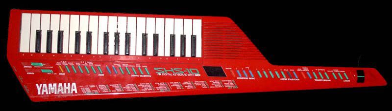
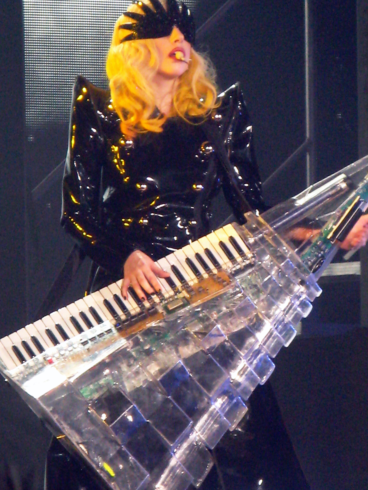
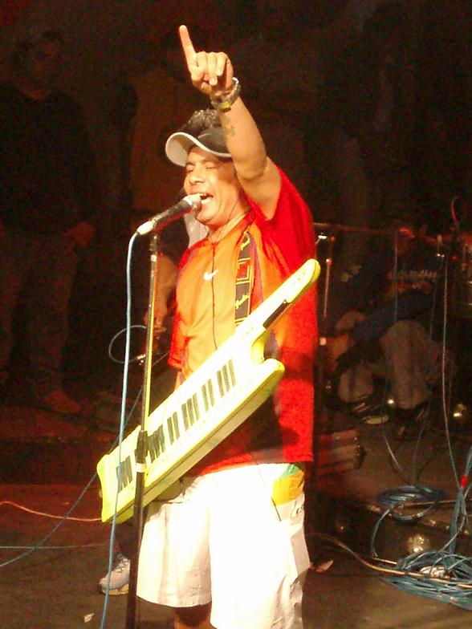
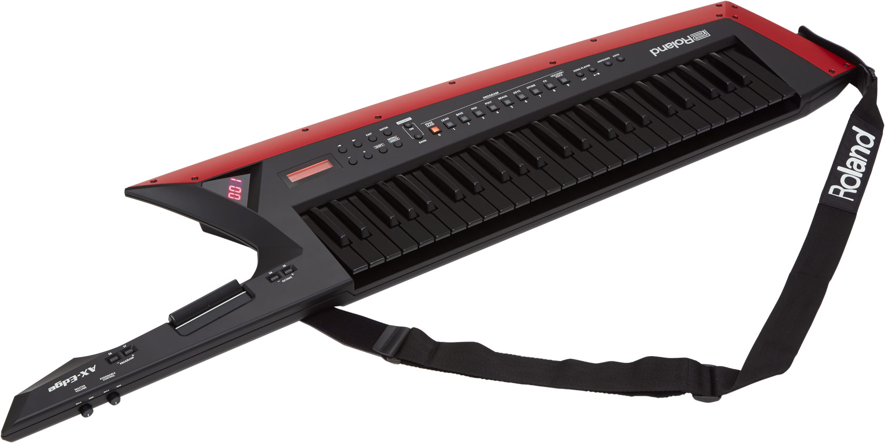

By Paul Meany, Keytar.jpg: https://www.flickr.com/photos/tommygunnphotography/derivative work: Clusternote (talk) - Paul Meany, Keytar.jpg, CC BY 2.0, Link
The Keytar is an keyboard instrument similar to synth that is held by a strap around the neck and held like a guitar. The neck of the instrument allows it to modify the sound shown in the list below.
Keytars can be their own synthesizer or rely on a computer as a MIDI controller.
The keytar is one of my favorite instruments because of it's sound and use in culture. While it doesn't sound to different from a normal synth, it shines on the stage in front of an audience. It's use in synthpop music means a lot too me and just how cool it looks. Below are my top 3 artists that use the keytar.

By nellyfus - https://www.flickr.com/photos/nellyfus/4410796290/in/set-72157623439706025/, CC BY-SA 2.0, Link
The earliest form of the synthesized keytar was the PMS Syntar, released in 1979. As time progressed, populatity rose and eventually peaked in 80's with glam metal bands. As trends changed the keytar was thrown to the side until its revival in the 2000's. The keytars current state is easily available but without a huge focus/appeal.

By Original uploader was TIP-XL - Trabajo Propio Own work, CC BY-SA 4.0, Link
There are a few keytars that stand out to me. The list below shows the top 5 keytars I'd recommend.
I like the ones made by Yamaha because of their price and quality. Although besides from them, for the absolute best on the market I'd sugest keytars made by Roland.
